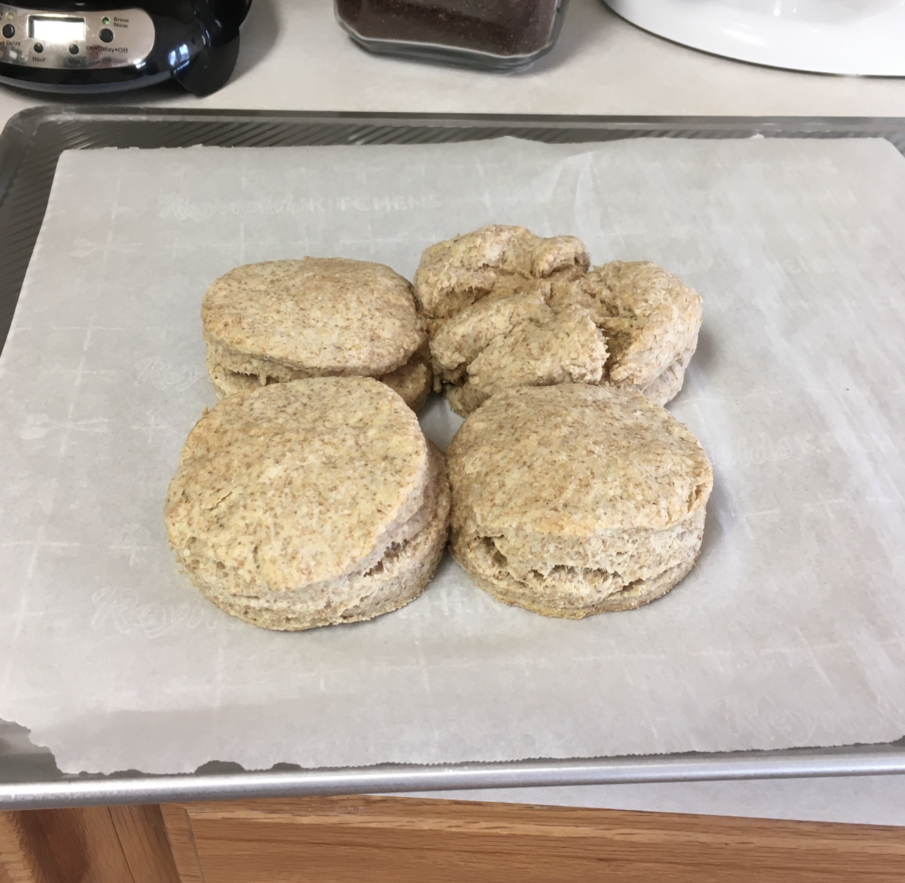
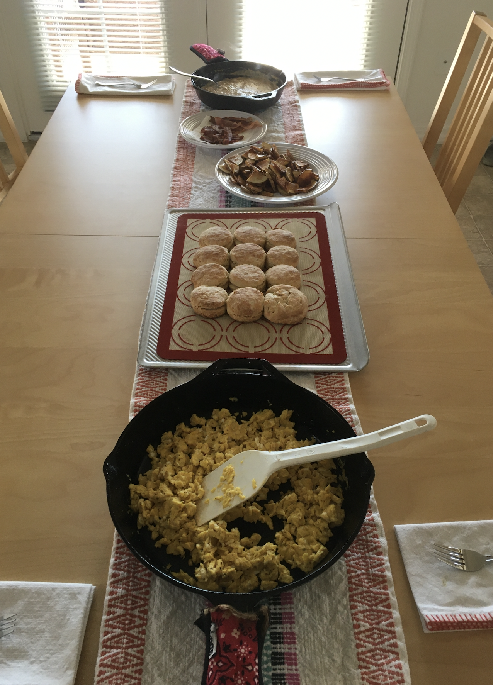

Homemade Biscuits

Description
Ah, biscuits. Fluffy, flaky, buttery...an American favorite! What more even needs to be said?
Tools You'll Need
- 9x13 inch (23x33 cm) baking dish
- dough cutter
- mixing bowl
- measuring cups and spoons and/or kitchen scale
- round biscuit or cookie cutter
Look, need is a really strong word here. In a perfect world, sure, you'd have all those things. But if you've got a couple of butter knives, a bowl, a cup, and something to bake the biscuits on, you'll be alright.
Ingredients
- 2 cups (240g) all-purpose flour
- 1 tbsp (14g) baking powder
- 1.5 tsp (9g) salt
- 5 tbsp (70g) butter, cold and cubed
- 1 cup (240ml) whole milk, cold
Process
- Preheat your oven to 425° F (220° C).
- In a medium bowl, whisk together the flour, baking powder, and salt.
- Using a dough cutter or a couple of butter knives, cut the cold butter into the dry ingredients. Alternatively, you can use your fingers to work the butter into the dry ingredients. Don't overdo it.1
- Add about 3/4 of your milk and start mixing the dough together. Add the rest little by little as you go. You may not use all of it. What you're looking for is a very slightly moist and sticky dough.
- After the dough comes together a bit (it's okay if there are still dry bits hanging around in the bowl), turn the bowl's contents out onto a lightly floured countertop and knead it together just until it finishes incorporating. A full minute is too long.
- Pat your dough down to flatten it to a relatively uniform thickness that you're happy with. Somewhere between 0.5 and 1 inch (~1 to 2.5 cm) is good.
- Using a floured biscuit cutter (or a drinking glass), cut out the biscuits and lay them in your baking dish. They're going to be cozy in there. Squeeze 'em in.
- Bake for 20 to 25 minutes, until just browned on the tops.
- Remove from the oven and let rest for about five minutes before serving.

Notes
- Most recipes for biscuits and similar baked goods will tell you to work the butter into the flour until it reaches a "sandy consistency." That's correct, but it might lead you to think that you have to keep working until you don't have anymore chunks of butter hanging around in there. It's not that serious. Work it in a bit, but if it's been a minute or two, you've done enough.
- Low-fat, lactose-free, and dairy-free options all work fine.
Home